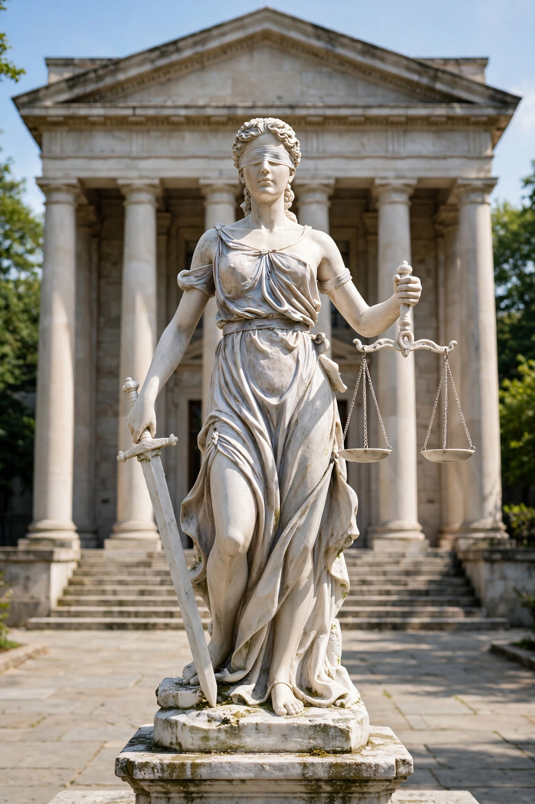

Judiciary
From Wikipedia, the free encyclopedia

Lady Justice personifies the judiciary's impartiality — blindfolded, with scales and sword.
The judiciary (also known as the judicial system, judicature, judicial branch or court system) is the system of courts that adjudicates legal disputes and interprets, defends and applies the law in legal cases. Judicial independence — insulation of judges from improper political pressure — is treated in most constitutional theory as essential to the Rule of law.
Functions
Courts resolve disputes between private parties (civil cases), prosecutions brought by the state (criminal cases), challenges to government action (administrative and constitutional cases) and questions of international law. In Common law systems, judicial decisions create binding Precedent, so the judiciary also develops the law; in civil law systems the judicial role is framed more as applying codes, though courts still exercise substantial interpretive influence.
Structure
Most systems are hierarchical: trial courts hear cases first, intermediate appellate courts review decisions, and a supreme or constitutional court has final authority. Judges may be appointed by the executive with legislative confirmation, chosen by independent commissions, elected (in some US states), or recruited as career professionals (common in civil-law countries). Tenure during good behaviour, protected salaries and restrictions on removal are standard safeguards of independence.
Judicial review
Where constitutions permit, courts may practise Judicial review: invalidating statutes or executive acts that conflict with the constitution. The power is famously associated with the United States Supreme Court's decision in Marbury v. Madison (1803); many countries instead have specialised constitutional courts, following the Austrian model of 1920 championed by Hans Kelsen. Critics debate the "counter-majoritarian difficulty" — unelected judges overriding elected legislatures — while defenders emphasise the protection of rights and constitutional limits.